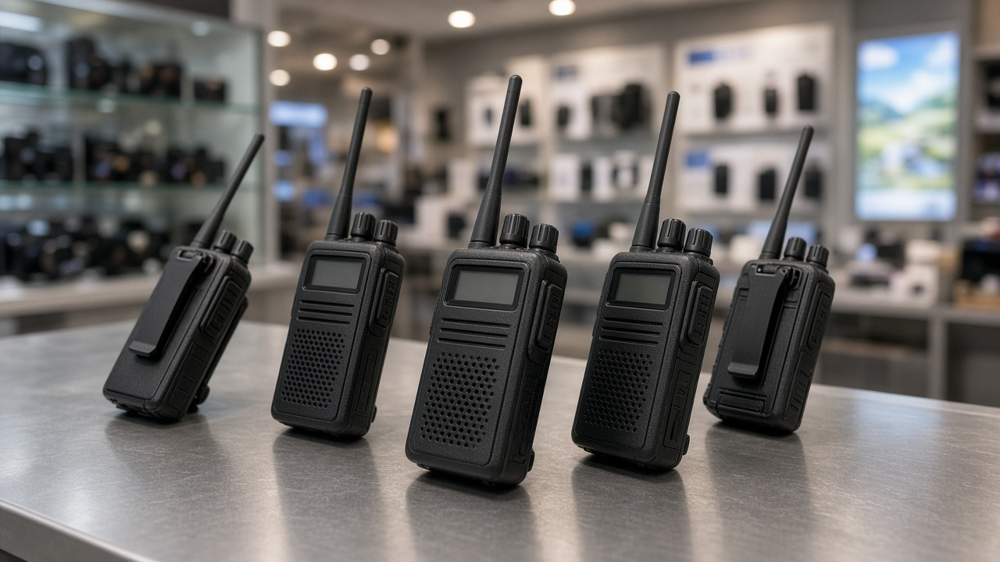
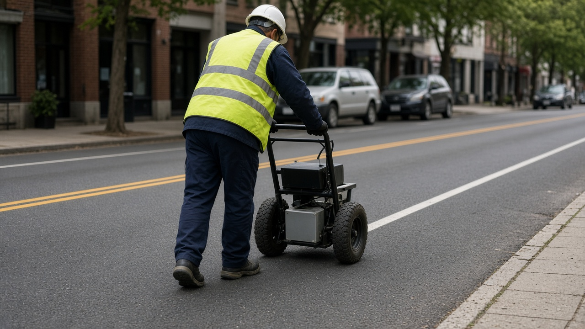

아날로그 생활무전기, 올해 말 사용 종료 대신 2032년 말까지 6년 더 쓸 수 있게 된 이유
캠핑이나 등산, 매장이나 행사장에서 아날로그 생활무전기를 쓰고 계신 분들은 올해 말이면 더 이상 못 쓴다는 이야기에 걱정이 많으셨을 거예요.
산 지 얼마 안 된 기기를 몇 년 만에 버려야 하나 고민하던 분들께 반가운 소식이 나왔어요.
과학기술정보통신부가 11월 19일부터 아날로그 생활무전기 이용기한을 늘리는 무선기기 기술기준 개정을 시행했거든요.
얼마나 늘었는지, 그래도 지켜야 할 점은 무엇인지, 함께 바뀐 전파 규제 두 가지까지 차례로 정리해 볼게요.
올해 말 끝날 예정이던 이용기한이 2032년 말로 늘었어요
400메가헤르츠 대역 아날로그 생활무전기는 원래 2026년 12월 31일까지만 쓸 수 있었어요.
이번 개정으로 이 기한이 2032년 12월 31일까지로 6년 늘어났어요.
지금 아날로그 생활무전기를 쓰고 있다면 올해 말에 서둘러 바꾸지 않아도 된다는 뜻이에요.
이번 내용은 11월 19일부터 시행됐고, 지난 10월 13일부터 11월 3일까지 행정예고를 거쳐 확정됐어요.

금지 직전에 산 사람들의 사정이 반영됐어요
생활무전기는 통화 품질과 주파수 이용 효율을 높이려고 2015년부터 디지털로 바뀌어 왔어요.
그러다 2024년부터는 아날로그 생활무전기를 새로 만들거나 수입하거나 파는 일이 금지됐어요.
문제는 금지 직전에 아날로그 제품을 산 분들이었어요. 2026년 말 종료라면 몇 년 쓰지도 못하고 기기를 바꿔야 했으니까요.
정부는 이런 의견이 꾸준히 나왔다는 점을 받아들이고, 조달청이 고시한 기기 내구연한 9년을 고려해 사용 종료 시점을 뒤로 미뤘어요.
새 아날로그 제품을 사고파는 건 여전히 안 돼요
여기서 헷갈리기 쉬운 부분이 있어요. 늘어난 건 이미 가진 기기를 쓸 수 있는 기간이지, 아날로그 제품 판매가 다시 허용된 게 아니에요.
2024년부터 이어진 신규 제조와 수입, 판매 금지는 그대로 유지돼요.
정부는 오히려 새로 만들거나 들여와 파는 아날로그 생활무전기 유통을 더 강하게 적발하고 단속하겠다고 밝혔어요.
사용 종료 시점이 정해진 제품이 계속 팔리면 산 사람이 피해를 볼 수 있기 때문이에요.
그러니 앞으로 무전기를 새로 산다면 디지털 제품인지 꼭 확인하고, 아날로그 제품을 싸게 판다는 곳은 조심하는 게 좋아요.

10.5기가헤르츠 물체감지센서는 실외에서도 쓸 수 있어요
이번 개정에는 무전기 말고도 생활과 가까운 변화가 두 가지 더 들어 있어요.
하나는 10.5기가헤르츠 대역 물체감지센서를 이제 실외에서도 쓸 수 있게 된 거예요.
이 센서는 전파로 물체의 움직임을 알아채는 기기로, 건물 출입 감지나 골프공과 야구공의 궤도를 추적하는 데 쓰여요.
그동안은 같은 대역을 쓰는 방송 중계용 무선국과 전파가 섞일 우려 때문에 실내에서만 쓸 수 있었어요.
그런데 이런 무선국이 14개에서 2개로 크게 줄면서 간섭 걱정이 낮아졌고, 그래서 실외 사용이 허용됐어요.
싱크홀을 찾는 투과레이다 기준도 새로 생겼어요
나머지 하나는 땅속이나 벽 안을 들여다보는 지표투과레이다와 벽투과레이다의 이용 기준이 새로 마련된 거예요.
이 장비들은 전파가 물체를 통과하거나 되돌아오는 성질을 이용해 눈에 보이지 않는 내부 구조물을 찾아내요.
싱크홀 사고를 막거나 건물과 시설물을 점검하는 현장에서 쓰임이 늘고 있는데, 이번에 주파수 대역별 출력과 이용 조건이 정해졌어요.
탐지 성능은 충분히 살리면서 다른 무선기기에 혼신을 주지 않도록 한 것이 핵심이에요.
내 무전기가 아날로그인지 디지털인지 헷갈린다면 제품 설명서나 판매처 안내를 먼저 살펴보고, 자세한 기준은 과학기술정보통신부 누리집의 11월 19일 보도자료에서 확인해 보세요.
참고 자료 과학기술정보통신부 2026년 11월 19일 보도자료 생활현장 밀접형 전파규제 3건 개선, 과학기술정보통신부 2026년 제69호 고시 신고하지 아니하고 개설할 수 있는 무선국용 무선기기 일부개정, 연합뉴스 2026년 11월 19일 기사, 지디넷코리아 2026년 11월 19일 기사
태그 생활무전기 아날로그무전기 무전기이용기한 디지털무전기 과학기술정보통신부 전파규제 물체감지센서 지표투과레이다 싱크홀 생활정보